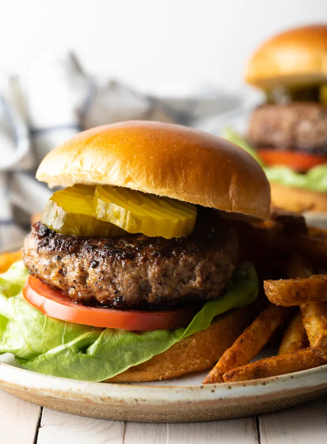

Hamburger Patty Recipe

Description
This burger is an all American recipe that can be
made on the grill or stovetop. It has a variety of
herbs and spices to make the taste great.
Ingredients
- Ground Chunk 80 lean/20 fat
- Crushed Crackers
- Worcestershire sauce
- Egg
- Milk
- Salt, Garlic Powder, Onion Powder,
Pepper, and other spices of choice
Steps
- Get large mixing bowl and place ground beef,
crushed crackers, egg, Worcestershire sauce, and spices.
Use your hands to combine the mixture
- Press the meat down in the bowl into an even disk. Use
a knife to cut and divide the mixture into 6 - 1/3 pound patties.
- Set out a baking sheet, lined with wax paper or foil, to hold the patties. One at a time, gather the patty mix
and press firmly into patties of your desired thickness.
- Place the formed patties on the baking sheet. With thick patties, press a dent in the
center of each patty, so they don’t puff up while cooking.
- Then, preheat the grill or a skillet to medium heat,
approximately 350-400 degrees F.
- Grill or fry the patties for 3-4 minutes
per side for a medium burger.
- Once your burgres are cooked, Place any toppings that
you want to complete your burger.